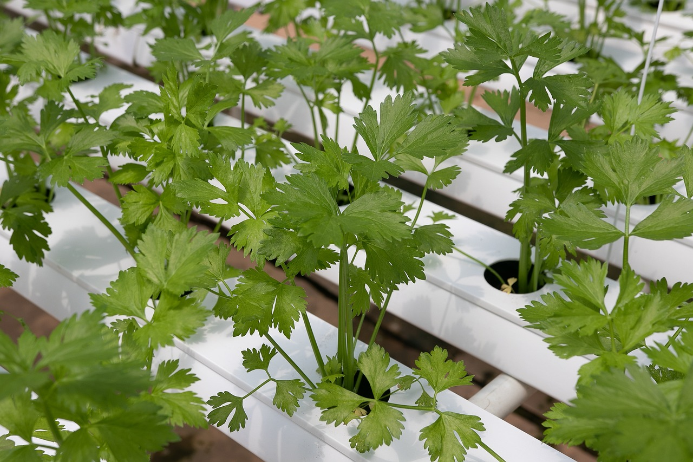

Hydroponic farming is a method of growing plants without soil, using mineral nutrient solutions in a water solvent. Instead of soil, the plant's roots are directly immersed in the nutrient-rich water solution, allowing them to absorb essential minerals for growth. This method offers several advantages, including efficient use of water, precise control over nutrient levels, and the ability to grow plants in environments where soil quality is poor or space is limited.
